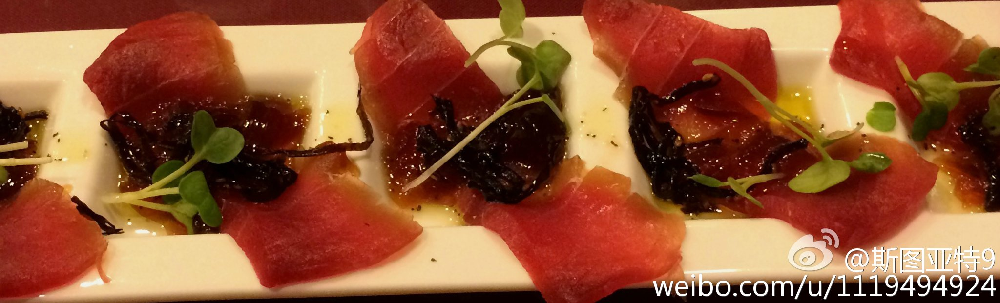
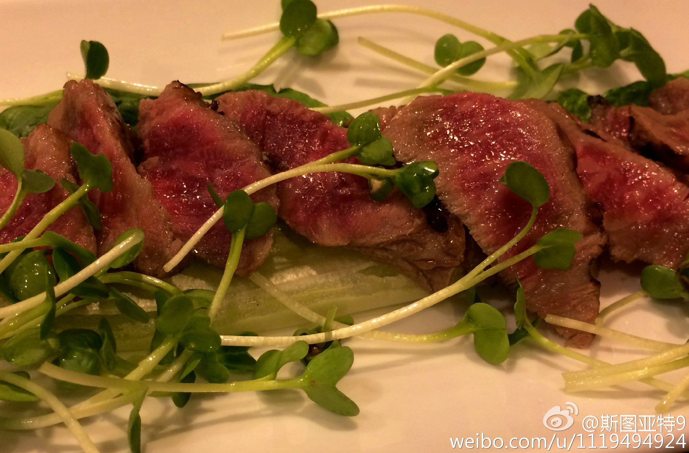

经常去的日本饭馆马车道(网页链接 )减少了营业时间，周末中午不营业了。担心它生存不下去了，跟大家作个广告。那家店食品品质是非常好的，午饭的便当、Yamakake套餐、筑前煮等好吃而实惠，小菜各个精致好吃，萨摩和牛绝对物有所值，锄烧拉面饭团茶渍饭等也都不错。附几张之前拍的照片。 
看来股市和房市就是一个样子啊。一年从2000涨到5000，但从5000跌到4000了政府就出来救市了。可是里外里过去一年还是疯长了一倍啊，不过回调了20%。政府一定要给民众一个市场只许涨不许跌的预期？不说是不是应该，这能做到吗？

 网页链接 )减少了营业时间，周末中午不营业了。担心它生存不下去了，跟大家作个广告。那家店食品品质是非常好的，午饭的便当、Yamakake套餐、筑前煮等好吃而实惠，小菜各个精致好吃，萨摩和牛绝对物有所值，锄烧拉面饭团茶渍饭等也都不错。附几张之前拍的照片。
网页链接 )减少了营业时间，周末中午不营业了。担心它生存不下去了，跟大家作个广告。那家店食品品质是非常好的，午饭的便当、Yamakake套餐、筑前煮等好吃而实惠，小菜各个精致好吃，萨摩和牛绝对物有所值，锄烧拉面饭团茶渍饭等也都不错。附几张之前拍的照片。